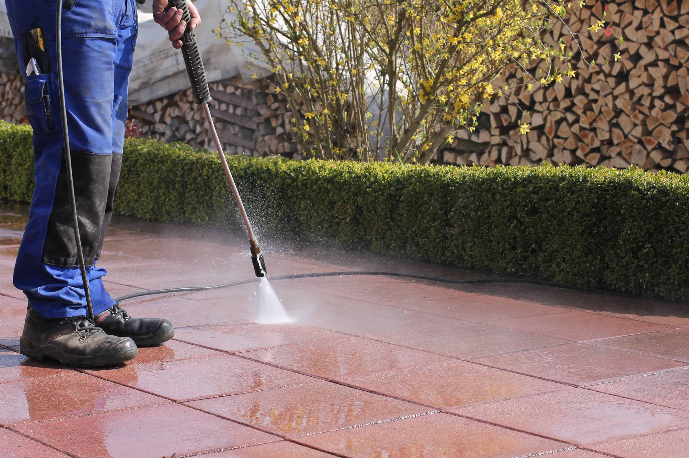

As the winter frost thaws across Cardiff and Caerphilly, you might be looking out the window and realizing your garden has seen better days. Winter weather takes a big toll on our outdoor spaces, leaving behind dead leaves, mossy patios, and slippery, algae-covered decking.
Spring is the perfect time to clear the slate and prepare your garden for the warmer months. Here is our expert guide to waking your garden up from hibernation and—most importantly—how to clean your hardscaping safely without causing expensive damage.
Phase 1: The General Clean-Up
Before you tackle the heavy-duty cleaning, you need to clear the decks (literally).
- Clear Debris: Rake up dead leaves and fallen twigs from your lawn, flowerbeds, and patio. This prevents rot and stops pests from making a home in the damp organic matter.
- Check Structures: Inspect fences, pergolas, and raised beds for winter damage. Heavy winds can loosen fence panels and rot timber posts. (If you need repairs, check out our fencing services).
- Prune and Chop: Cut back dead stems on perennials and prune any shrubs or trees that need taming before they put energy into new spring growth.
Phase 2: Safely Cleaning Your Decking
Decking—whether timber or composite—often turns green and slippery over winter. It's tempting to blast it on maximum power with a pressure washer, but stop right there!
Timber Decking
Using a high-pressure jet wash with a narrow nozzle will strip the timber, gouge the wood, and raise the grain, leading to splinters and faster rotting.
- Sweep off all loose dirt.
- Use a stiff-bristled brush (not wire!) and a specialized decking cleaner or a mixture of warm water and oxygen bleach (soda crystals). Avoid chlorine bleach, which damages the wood fibers.
- Scrub the deck along the grain of the wood.
- Rinse it down with a standard garden hose or a pressure washer set to a very low, wide fan setting held at least 30cm away from the surface.
Composite Decking
Composite decking is easier to maintain but can still be ruined by aggressive power washing.
- Use warm, soapy water and a soft-bristled brush.
- Do not use strong chemicals or bleach, which can fade the high-quality finish.
- Rinse thoroughly.
Phase 3: Restoring Your Patio Safely

Whether you have natural Indian Sandstone, porcelain tiles, or block paving, your patio probably looks a bit tired. Here is how to clean it without ruining the joints.
The Golden Rule of Jet Washing Patios
The biggest mistake homeowners make is pointing a high-pressure lance directly at the joints between the slabs. This blasts the mortar or pointing compound straight out into the garden. Once the pointing is gone, water gets underneath the slabs, causing them to loosen and wobble during the winter freezes.
How to Do It Right:
- Pre-Treat: For heavily soiled or algae-covered patios, the best approach is a "soft wash." Apply a patio cleaner or a light hypochlorite solution, let it sit for 30 minutes to kill the biological growth, and agitate it with a stiff brush.
- Wide Fan Jet Wash: If using a pressure washer, use a wide fan nozzle. Hold it at a 45-degree angle to the paving so it pushes the dirt away rather than forcing water directly down into the joints.
- Surface Cleaners: If you have one, use a rotary flat-surface cleaner attachment. These spread the pressure out over a wider area, drastically reducing the chance of blowing out your pointing.
- Post-Clean Sanding: If you have block paving, remember that washing removes the kiln-dried sand from the joints. You *must* brush fresh kiln-dried sand back into the gaps once the driveway is completely dry to lock the blocks back in place and prevent weeds.